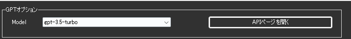
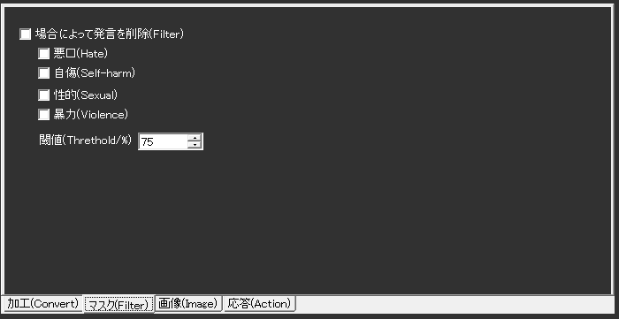
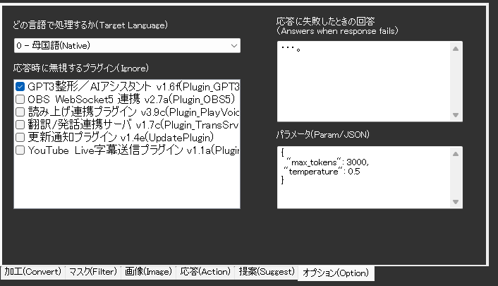

GPT3整形/AIアシスタント
前提条件
- なし
このプラグインで出来ること¶
- 複数のAIモデル（GPT-3/GPT-4、Claude、Gemini、Grokなど）を使用した高度な文章処理
- AI を使用した画像生成（DALL-E）
- AIアシスタント機能による対話型応答
- 文章の自動整形と改善
- 不適切なコンテンツのフィルタリング
ライセンスについて
- この機能を使うためには、使用するAIサービスのAPIキーを取得する必要があります
- OpenAI（GPT）、Anthropic（Claude）、Google（Gemini）、xAI（Grok）など各社の利用規約に従ってください
- 支援版をご利用の方は、一部機能をAPIキーなしで利用可能です
謝辞
- 後程出てくる「VRM_AI」の開発者はとりにく様です。
うまく動かないときのレポートについて
- 本件について、とりにく様に直接問い合わせをしないでください。
有効化¶
- プラグインを使うチェックをONにしてください。
動作の仕組み¶
このプラグインは複数のAIプロバイダーに対応し、以下の機能を提供します：
対応AIサービス¶
- ChatGPT（OpenAI）: GPT-4、GPT-3.5など人気のAIモデル
- Claude（Anthropic）: 日本語処理が得意なAI
- Gemini（Google）: Googleの高性能AI
- Grok（xAI）: イーロン・マスク社のAI
- その他: 様々なAIサービスに対応
できること¶
- 音声認識の文章を改善: 話し言葉を読みやすい文章にAIが修正
- 不適切な言葉をフィルタ: よくない言葉を自動で見つけて削除
- AI画像生成: 文章から画像をAIが作成（ChatGPTのみ）
- AIとの対話: 質問すると人工知能が答えてくれる機能
- 画像の説明: 画像を見せるとAIが内容を説明
言語サポートについて
- 日本語、英語を中心に多言語対応
- モデルによって対応言語の精度が異なります
- Claude は日本語処理に特に優れています
設定¶

| 設定 | 意味 |
|---|---|
| AIプロバイダー | 使用するAIサービスを選択（OpenAI、Claude、Gemini、Grok等） |
| APIキー | 選択したサービスのAPIキーを入力 |
| Organization | 組織ID（OpenAIで複数契約がある場合のみ） |
| Model | 使用するAIモデルを選択 |
| APIエンドポイント | カスタムAPIを使用する場合のURL |
AIサービスの設定方法¶
おすすめのAIサービス¶
ChatGPT（OpenAI） - 最も使いやすく人気のAI - 公式サイト：https://platform.openai.com/ - 初心者におすすめ
Claude（Anthropic）
- 日本語が得意なAI
- 公式サイト：https://console.anthropic.com/
- 日本語の文章作成に適している
Gemini（Google） - Googleが作ったAI - 公式サイト：https://aistudio.google.com/ - 無料で使える範囲が広い
APIキーの取得方法¶
簡単な手順
- 使いたいAIサービスの公式サイトにアクセス
- アカウントを作成してログイン
- 「APIキー」や「新しいキーを作成」を探してクリック
- 表示されたキー（英数字の長い文字列）をコピー
- ゆかコネの設定画面に貼り付け
APIキー設定の注意点¶
セキュリティ¶
- APIキーは外部に漏らさない
- 不要になったら削除する
- 定期的にキーを再生成する
料金管理¶
OpenAI使用量確認手順:
1. OpenAI Platform → Usage
2. 月ごとの使用量とコストを確認
3. Billing → Set monthly limit で予算設定推奨
よくあるエラー¶
| エラーメッセージ | 原因 | 解決方法 |
|---|---|---|
| "Invalid API key" | キーが間違い | キーを再確認・再入力 |
| "Rate limit exceeded" | 使用量上限 | 時間をおいて再実行 |
| "Insufficient quota" | 残高不足 | 支払い方法確認・チャージ |
| "Model not found" | モデル名間違い | 正確なモデル名確認 |
コスト最適化のコツ¶
設定調整¶
- 文字数制限: 実行下限文字数を10文字以上に設定
- モデル選択: 用途に応じてGPT-4.1を使用
- プロンプト簡潔化: 不要な指示を削除
無料・安価な代替案¶
- Gemini無料枠: 月60回まで無料
- ローカルAI: OllamaなどでオフラインAI
- 支援版機能: ゆかコネ支援版のAI機能活用
APIキーについて
- 最新版では、APIキーの入力欄がNEO本体のオプション設定に統合されています
- 複数のプロバイダーのAPIキーを同時に設定可能
- 支援版をご利用の方は、APIキーがなくても支援範囲内で機能を利用可能です
| 設定 | 意味 |
|---|---|
| 文章を加工させる | 音声認識結果をAIに修正させます |
| プロンプト | どの様に修正させるかを指示します。「$」と書くと、音声認識結果がそこにはいります |
| AIの役割 | AIの口調、人格を設定します。具体的な方が行動に移しやすいです。 |
| パラメータ | GPTに指示するパラメータを指示します。 |
| 実行下限文字数 | 音声認識結果がこの文字数を下回った場合、実行しません |

| 設定 | 意味 |
|---|---|
| 発言を削除 | 音声認識結果が該当する場合に字幕をけします。 |
| 閾値 | AIは発言として何割そのニュアンスが含まれているか判断するため、どこで実行に移すかを指示します |
| 設定 | 意味 |
|---|---|
| 写真画面 | 写真を表示するための画面を表示します |
| いつまで出すか | 画像表示をどれぐらい行うか決めます |
| 場合によって発言を削除 | 特定のレートを超えた場合に、文を「***」に置き換えます |
| いつまで出すか | 画像表示をどれぐらい行うか決めます |
| 閾値 | この数値を超えた場合に「***」に置き換えます。目安として75%ぐらいから様子を見るとよいでしょう |
| 画像を生成 | 認識した文章をもとに画像を生成します。画像サイズも自分でえらびます |
| 起動ワード | すべての認識を生成すると、OpenAIの利用料金が高くなるため、指定ワードが含まれていたときのみ生成するように指定できます(利用推奨)。空欄にするとすべての認識を変換するようになります |
| 設定 | 意味 |
|---|---|
| 問い合わせに応じる | AIアシスタント機能をONにします |
| - 起動ワード | AIアシスタントを呼び出すキーワードを指定します |
| - AIの名前 | AIに自認させる名前を設定します |
| 過去の問い合わせを記憶 | 過去5会話を記憶します。引き続き話す場合に有用です |
| 問い合わせ結果をVRM_AIに出力 | とりにく様製作のツールと連動させる場合にONにします |
| - 送信先 | VRM_AIの通信ポートを設定します |
| 表情をOSCで送信 | ばもきゃプラグインをつかって、表情データを送ります（プロンプトに表情指示をした場合のみ） |
| Wikipedia機能呼び出し | Wikipedia検索機能の有効化（日本語、英語、カスタムURL対応） |
| 提案システム | AI による会話トピック提案機能 |
| ユーザ識別 | セッション間での永続的なユーザ識別 |
Wikipedia 統合機能¶
- 日本語Wikipedia: 日本語記事の検索と取得
- 英語Wikipedia: 英語記事の検索と取得
- カスタムWiki: 独自WikiサイトのURL設定対応
- Function Calling: OpenAI の Function Calling API による自動検索
画像生成の詳細設定¶
| 解像度オプション | サイズ | 用途 |
|---|---|---|
| Option 1 | 256x256 | 小サイズ・テスト用 |
| Option 2 | 512x512 | 標準サイズ |
| Option 3 | 1024x1024 | 高解像度・正方形 |
| Option 4 | 1792x1024 | 横長・16:9風景 |
| Option 5 | 1024x1792 | 縦長・ポートレート |
| Option 6 | 1344x768 | 横長・映画風 |
| Option 7 | 1024x675 | 標準的な横長比率 |
表情をOSCで送信について
- 送信先は、VMCプロトコルに対応しているツールであれば、基本的にはうごきます。
- 表情データしかおくらないため、他のモーションツールと併用するのがよいかもしれません

| 設定 | 意味 |
|---|---|
| 応答時に無視するプラグイン | AIが発話するときに動くと都合のわるいプラグインを無視します |
使い方¶
- 音声認識させると自動的に処理されます。
AIアシスタントをつくるには¶
- AIアシスタントをつくる手順を参考に設定してみてください
高度な設定¶
カスタムAPIエンドポイント¶
OpenAI互換のAPIを提供するサービスを利用する場合：
- AIプロバイダーで「カスタム」を選択
- APIエンドポイントにURLを入力（例: https://api.example.com/v1）
- APIキーを設定
- モデル名を手動で入力
プロンプトエンジニアリング¶
効果的なプロンプトの例：
# 文章整形用
あなたは優秀な編集者です。以下の音声認識結果を自然な日本語に修正してください：
- 句読点を適切に追加
- 誤字脱字を修正
- 話し言葉を書き言葉に変換
$
# AIアシスタント用
あなたは親切で知識豊富なアシスタントです。
- 簡潔で分かりやすい回答を心がける
- 技術的な内容も初心者に理解できるように説明
- 必要に応じて例を提示
パフォーマンス最適化¶
| 設定項目 | 推奨値 | 説明 |
|---|---|---|
| Temperature | 0.3-0.7 | 低い値で一貫性重視、高い値で創造性重視 |
| Max Tokens | 100-500 | 応答の最大長（コスト削減） |
| Top P | 0.9 | 生成の多様性制御 |
| 実行下限文字数 | 10 | 短い発話を無視してコスト削減 |
トラブルシューティング¶
APIキーエラー¶
- APIキーが正しく入力されているか確認
- APIの利用制限や請求設定を確認
- プロバイダーのダッシュボードで使用状況を確認
レスポンスが遅い¶
- より軽量なモデルを選択（例: GPT-3.5-turbo、Claude Haiku）
- Max Tokensを減らす
- ネットワーク接続を確認
日本語が文字化けする¶
- 文字エンコーディングをUTF-8に設定
- プロンプトに「日本語で回答してください」を追加
技術仕様と高度な機能¶
セキュリティ機能¶
- コンテンツモデレーション: 4つのカテゴリで内容フィルタリング
- Hate（ヘイト）: 0-100%の閾値設定
- Sexual（性的コンテンツ）: 0-100%の閾値設定
- Violence（暴力）: 0-100%の閾値設定
- Self-harm（自傷行為）: 0-100%の閾値設定
- 自動削除: フラグ付きコンテンツの自動除外
- プロキシ対応: 企業環境でのネットワーク設定対応
パフォーマンス最適化¶
- レスポンスキャッシュ: API呼び出し削減と高速化
- 非同期処理: ノンブロッキング動作によるリアルタイム性能
- 接続プール管理: HTTP クライアントの効率的な管理
- エラーハンドリング: 包括的なエラー管理とフォールバック応答
統合機能¶
- クロスプラグイン制御: 他のプラグインの選択的無効化
- データ共有: プラグイン間でのユーザ情報共有
- 言語ターゲティング: 特定翻訳レイヤーの処理指定
- VRM_AI連携: 外部ツールとのリアルタイム連携
- OSC/VMC出力: 表情データの外部システム送信
開発者向け機能¶
- 詳細ログ出力: デバッグ情報の包括的記録
- JSON設定管理: 構造化された設定ファイル
- 多言語UI: 7言語対応のユーザインターフェース
- API互換性: OpenAI API 仕様への準拠